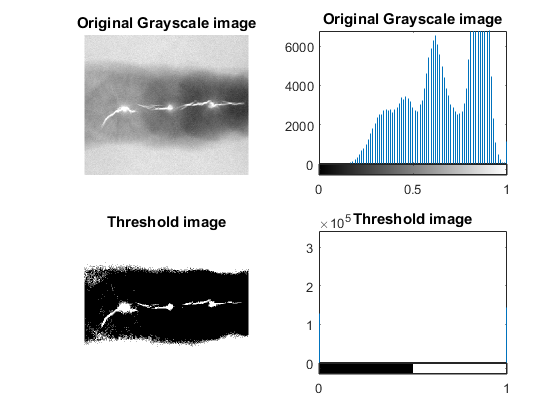
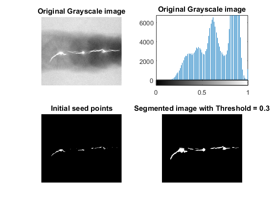
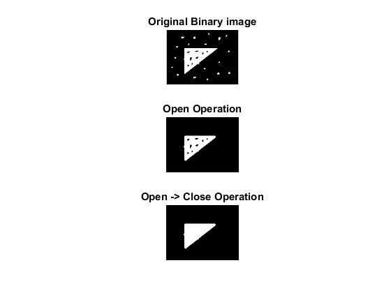
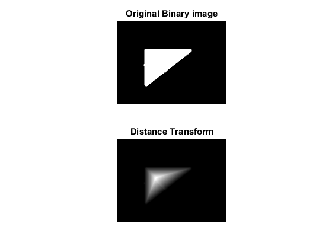
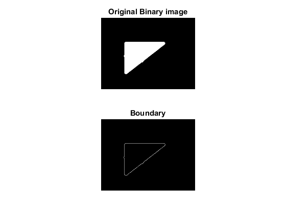
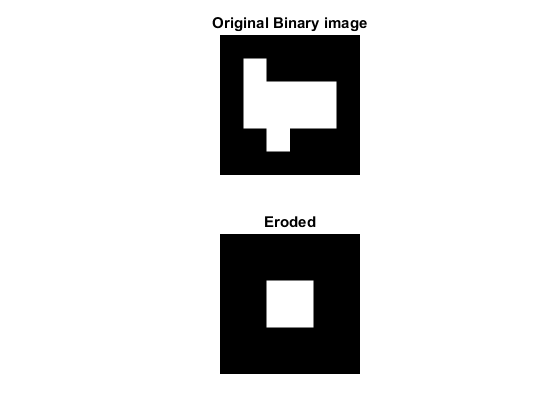

Contents
Setup
img1 = im2double(imread('images/Fig1043(a)(yeast_USC).tif'));
img2 = im2double(imread('images/Fig1051(a)(defective_weld).tif'));
img3 = im2double(imread('images/noisy.tiff'));
Task 1a: Segmentation by threshold
thresh = threshold(img2, 0.2);
figure('Name', 'Task 1a: Thresholding', 'NumberTitle', 'Off');
subplot(2,2,1);
imshow(img2);
title('Original Grayscale image');
subplot(2,2,2);
imhist(img2);
title('Original Grayscale image');
subplot(2,2,3);
imshow(thresh);
title('Threshold image');
subplot(2,2,4);
imhist(thresh);
title('Threshold image');

Task 1b: Region Growing
seed = img2 >= max(img2(:));
result = regiongrowing(img2, seed, 0.3);
figure('Name', 'Task 1b: Region Growing', 'NumberTitle', 'Off');
subplot(2,2,1);
imshow(img2);
title('Original Grayscale image');
subplot(2,2,2);
imhist(img2);
title('Original Grayscale image');
subplot(2,2,3);
imshow(seed);
title('Initial seed points');
subplot(2,2,4);
imshow(result);
title('Segmented image with Threshold = 0.3');

Task 2a: Morphology - Remove noise
binary = threshold(img3, 0.3);
se = strel('disk', 8);
open = imopen(binary, se);
closed = imclose(open, se);
figure('Name', 'Task 2a: Morphology - Remove noise', 'NumberTitle', 'Off');
subplot(3,1,1);
imshow(binary);
title('Original Binary image');
subplot(3,1,2);
imshow(open);
title('Open Operation');
subplot(3,1,3);
imshow(closed);
title('Open -> Close Operation');

Task 2b: Distance Transform
img = closed;
erosion = img;
result = zeros(size(img));
se = strel('square', 3);
distance = 1;
while(sum(erosion(:)) > 0)
eroded = imerode(erosion, se);
diff = erosion - eroded;
result = result + diff * distance;
erosion = eroded;
distance = distance + 1;
end
result = uint8(result * (255/(distance - 1)));
figure('Name', 'Task 2b: Distance Transform', 'NumberTitle', 'Off');
subplot(2,1,1);
imshow(img);
title('Original Binary image');
subplot(2,1,2);
imshow(result);
title('Distance Transform');

Task 2c: Boundary extraction
img = closed;
se = strel('square', 3);
boundary = img - imerode(img, se);
figure('Name', 'Task 2c: Boundary extraction', 'NumberTitle', 'Off');
subplot(2,1,1);
imshow(img);
title('Original Binary image');
subplot(2,1,2);
imshow(boundary);
title('Boundary');

Theory 5: Erosion
b = [0 0 0 0 0 0;
0 1 0 0 0 0;
0 1 1 1 1 0;
0 1 1 1 1 0;
0 0 1 0 0 0;
0 0 0 0 0 0;];
se = strel('line', 3, 0);
figure('Name', 'Theory 5: Erosion', 'NumberTitle', 'Off');
subplot(2,1,1);
imshow(b);
title('Original Binary image');
subplot(2,1,2);
imshow(imerode(b, se));
title('Eroded');
